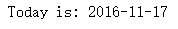
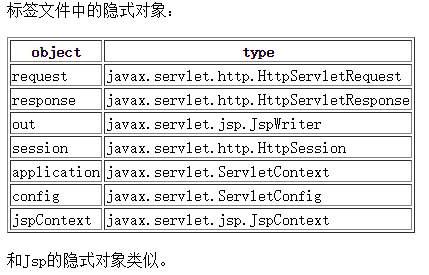
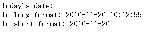

定制JSP标签可以实现一些JSTL和EL没有提供的功能，基本步骤就是编写标签处理器然后注册标签。从JSP2.0以后，可以直接编写标签文件（.tag）来代替定制JSP标签。
相比定制JSP标签，标签文件无需编写Java代码，无需注册标签，只需要在tag文件中写代码逻辑即可。
一个简单的例子：
在WEB-INF下创建tags文件夹，然后在里面新建一个firstTag.tag文件：
|
|
然后在firstTagTest.jsp页面中使用它：
|
|
部署到Tomcat中，启动服务，访问该jsp，页面显示：

That’ all.
标签文件中的隐式对象：
| 对象 | 类型 |
| request | javax.servlet.http.HttpServletRequest |
| response | javax.servlet.http.HttpServletResponse |
| out | javax.servlet.jsp.JspWriter |
| session | javax.servlet.http.HttpSession |
| application | javax.servlet.ServletContext |
| config | javax.servlet.ServletConfig |
| jspContext | javax.servlet.jsp.JspContext |
和Jsp的隐式对象类似。
标签文件指令
tag指令
tag指令常用属性：
| 属性 | 描述 |
| display-name | 通过XML工具显示的简称，默认为标签名 |
| body-content | 标签主体内容的信息，可以为empty，tagdependent或scriptless（默认） |
| import | 导入Java类型 |
| pageEncoding | 指定编码 |
| isELIgnoreds | 是否使用EL表达式 |
include指令
该指令可以引入静态文件（HTML文件）或动态文件（另一个标签文件）。
如有静态HTML文件included.html：
|
|
included.tag文件：
|
|
在include.tag标签中引用included.html和included.tag：
|
|
在jsp页面中测试：
|
|
启动访问，页面显示：

taglib指令
该指令的作用就是在一个标签文件中使用另外一个标签，如现有taglibDemo.tag：
|
|
该标签调用了第一个例子中创建的firstTag标签。
attribute指令
该指令在标签中使用属性，attribute常用的属性有：
| 属性 | 描述 |
| name | 属性名 |
| required | 是否式必须的，默认为false |
| type | 类型，默认为String |
|
|
jsp中测试：
|
|
页面显示：
variable指令
用于定义标签文件的变量，常用的属性有：
| 属性 | 描述 |
| name-given | 变量名 |
| scope | 范围 |
| description | 描述 |
|
|
jsp页面引用：
|
|
测试，页面显示：
